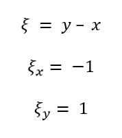

Приведение дифференциального уравнения в частных производных второго порядка к каноническому виду
Назад к главной
Шаг 1. Записать условия поставленной задачи. В общем виде условие выглядит так:
Шаг 2. Выписать коэффициенты а11, а12, а22, а1, а2 и а0. Это делается для удобства, чтобы потом их было проще подставлять в формулы.
Помните, что сам по себе коэффициент а12 - всего половина того числа или выражения, которое вы видите в изначальном уравнении, так как а12 - коэффициент при второй производной от двух переменных, где существует свойство инвариантности (Uxy = Uyx).
Шаг 3. Посчитать определитель матрицы, выглядящей так:
Если в результате было получено значение больше нуля, то тип уравнения гиперболический, и в новых переменных в нём коэффициенты А и С будут равны нулю, то есть:
Если в результате было получено значение меньше нуля, то тип уравнения эллиптический, и в новых переменных в нём коэффициенты А и С будут равны, а коэффициент B будет равен нулю, то есть:
Если в результате было получено значение, равное нулю, то тип уравнения параболический, и в новых переменных у него будут равны либо коэффициенты А и В, либо коэффициенты В и С, то есть:
Шаг 4. Записывается уравнение в полных дифференциалах:
Шаг 5. Уравнение в полных дифференциалах "делится" на (dx)²:
Шаг 6. Составляется характеристическое уравнение, которое решается, как квадратное:
Шаг 7. После нахождения корней производится обратная замена и решается ДУ с разделяющимися переменными:
В примере выше рассмотрена ситуация, когда корень не зависит от переменных, но это не всегда может быть так. В случаях зависимости корней от переменных уравнение с разделяющимися переменными решается, собственно, разделяя переменные. Рассмотрим и такой пример:
Если корней несколько, то ДУ решается для каждого корня. Это основы новых переменных.
Шаг 8. Выражается константа С. Из вышеописанного выражения
Шаг 9. В зависимости от корней выражаются новые переменные.
Для гиперболического типа переменными будут два разных значения С, полученные из разных корней характеристического уравнения
Для эллиптического типа корни будут комплексно сопряжёнными, поэтому:
На примере:
Вещественная часть комплексного числа - всё, что не умножено на мнимую единицу.
Мнимая часть комплексного числа - всё, что умножено на мнимую единицу i.
Для параболического типа у характеристического уравнения будет всего один корень второго порядка, т.е. два повторяющихся корня, поэтому:
На примере:
Шаг 10. Из новых переменных берутся частные производные по иксу и игреку.
Распишем взятие частных производных по x и у для вышеописанного примера новых переменных эллиптического типа:
Для первой переменной:

Для второй переменной:
Для параболического типа рекомендуется проверить, удовлетворяет ли ваш результат следующему требованию:
Шаг 11. Вычисляются коэффициенты А, В, С, D и Е по следующим формулам:
Шаг 12. Записывается ответ - уравнение в новых переменных следующего вида: